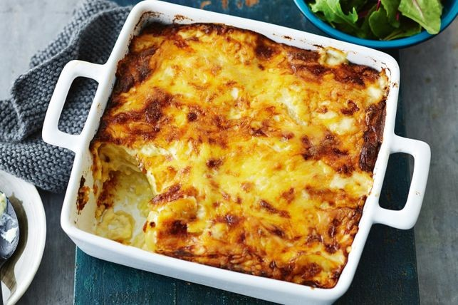

Potato Bake
A cheesy potato bake receipt!

Ingredients
- 60g of butter
- 1/4 cup of plain flour
- 2 cups of grated Devondale Tasty Cheese Block (500g)
- 1.2kg of Sebago potatoes. Peeled, thinly sliced
- 2 1/3 cup of milk
Instructions
- Preheat oven to 180 deg C. Grease a 6cm deep, 24cm square baking dish.
- Melt butter in a heavy-based saucepan over medium heat. Add flour. Cook, stirring constantly, for 2 minutes, or until bubly. Remove from heat. Slowly add milk, stirring until well combined. Return to heat. Cook stirring,until sauce comes to the boil.
- Add 1 1/2 cups of cheese. Stiry to combine.
- Arrange one-third of potatoes, overlapping slightly, over base of baking dish. Sprinkle with salt and pepper.Spoon one-third of the cheese sauce over the potatoes. Repeat twice. Sprinkle with remaining cheese. Bake for 1 hour, or until potatoes are tender and the top is golden. If top begins to brown too much, cover with foil.